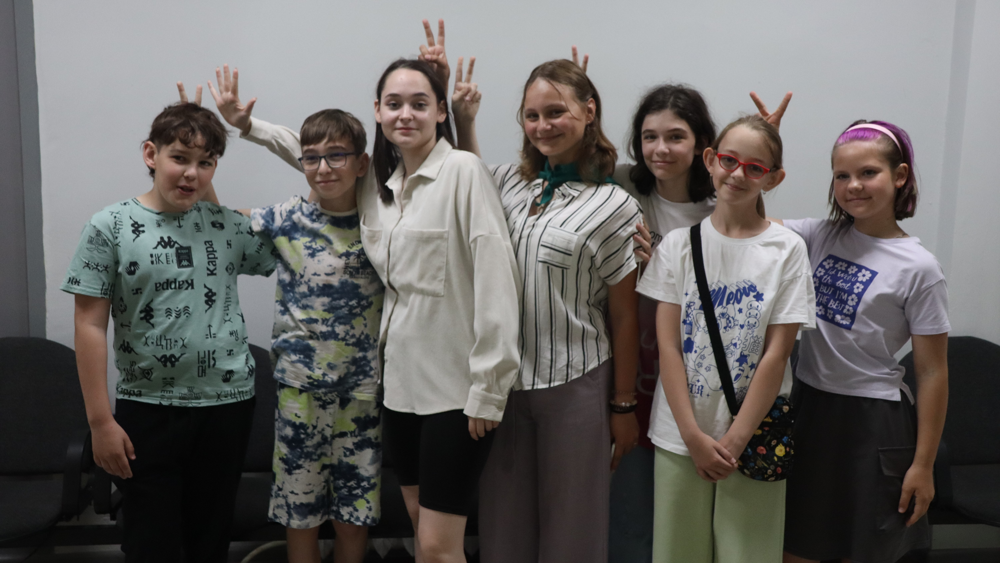

Ленинградская область 2024
ЛАГЕРЬ ЭРУДИТ
МЫ ОТКРЫЛИСЬ!
2024 | июнь | 4
Тридцать детей из Кировского района 11 - 17 лет отправились на встречу ярким приключениям, профессиональным знаниям, новым друзьям и незабываемым воспоминаниям! Кировский ЦИТ наполнился детским смехом и веселым шумом. Смена обещает пройти задорно и продуктивно.
СДЕЛАЕМ КЛАССНЫЙ РИЛС
Как создать клёвый видос в CapCut? Что такое монтаж? Как пользоваться приложением для монтажа? На все эти вопросы от пятиклассников Шлиссельбургской школы ответила Екатерина Сорокина на своём заключительном мастер-классе. Занятие прошло в дружеской обстановке. Первую часть урока Екатерина посвятила теории и подробно рассказала про видеосъёмку на телефоне, отметила тонкости и сложности работы и продемонстрировала свои работы. Далее пришло время для плодотворной работы. Дети с удовольствием вооружились своими смартфонами и приступили творить – создавать видео про свои занятия в ЦИТе и монтировать их в приложении для монтажа CapCut. В конце мастер-класса все учащиеся продемонстрировали свои работы. Дети получили новые знания и усовершенствовали свои навыки в съёмке и монтаже. Ребята отметили, что занятия были очень полезные и весёлые, а Екатерина научила много новому, всегда помогала и поддерживала.